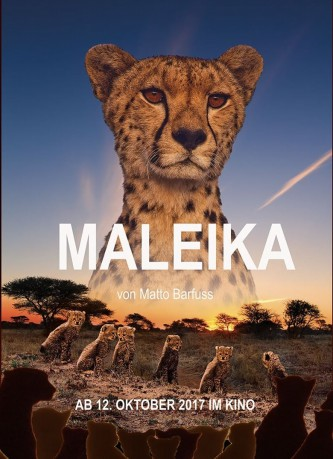

#9732 Maleika
 
 IMDB-Wertung: 6.8 / 10
IMDB-Wertung: 6.8 / 10  Metascore: 0
Metascore: 0 
Maleika ist ein deutscher Dokumentarfilm von Matto Barfuss aus dem Jahr 2017 über eine Gepardenfamilie. Sprecher sind Max Moor und Moritz Brendel. Weltpremiere war am 4. Oktober 2017 in Berlin. Der Film kam am 12. Oktober 2017 in die deutschen Kinos.
Jahr: 2017
Dauer: 105 Minuten
FSK: 0
Land: Deutschland Studio: Camino FilmverleihTonspuren:
Untertitel:
Auflösung: SD (720x576 (PAL DVD)) Größe: 0 MB
Genre: Familie, Dokumentation
Regisseur: Matto Barfuss
Drehbuch: Matto Barfuss, Lorena Josowic
Soundtrack: Jan Kalesnikovich, Petr Marx, Vladimír Suchý
Darsteller:
- Anne Alexander Sieder als Maleika Voice
- Max Moor als Narrator
- Moritz Brendel als Narrator
- Matto Barfuss als Himself
Datei: seit 12.10.2018
 Es gibt insgesamt 10 Filme in der Gruppe '.'
Es gibt insgesamt 10 Filme in der Gruppe '.'